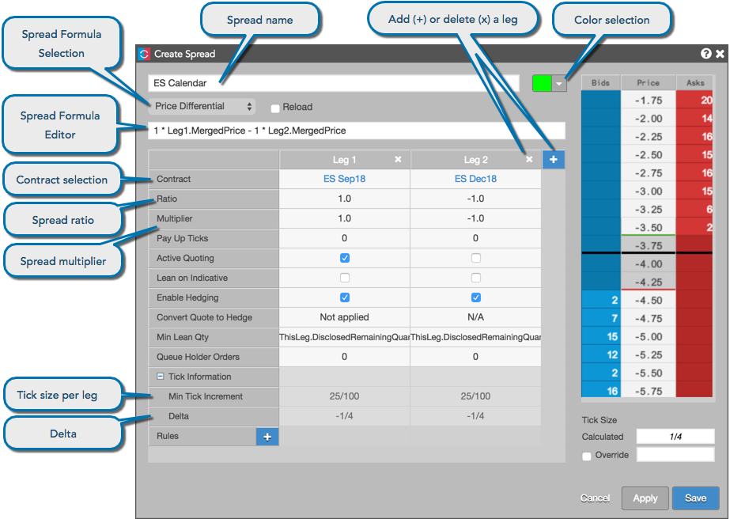
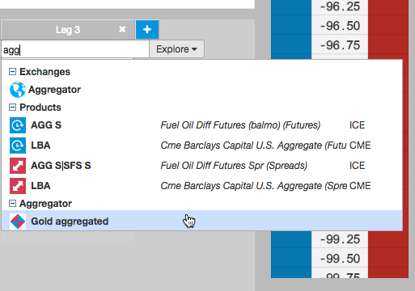

The spread definition fields apply to the entire synthetic spread. Use the configuration settings to select a contract and begin configuring spread behavior in each leg of your synthetic spread instrument.
The name of the synthetic spread. The name that you enter appears in the MD Trader® and Market Grid widgets when trading the synthetic spread.
Selects the color of working spreads and corresponding leg orders in MD Trader and the Market Grid. This color also displays next to the spread name in the Autospreader widget.
Note: When an offsetting hedge order is not immediately executed, the working order displays in a non-standard orange color. This color is not configurable. The color black indicates there are orders with more than one color at a given price level.
Select one of the following formulas for calculating the spread price:
Edit formulas for the selected spread formula or create a custom formula using standard arithmetic operators (the text field makes "intellisense" suggestions as you type). Enter a leg identifier followed by the "." to see a list of modifiers. As you type the custom spread formula, it is periodically checked and provides visual indication of the validity of the current arithmetic operation (text box highlights in green).
Specifies the contract for the leg. Click Select a Contract and use the search or market explorer functionality to select a contract.
When selecting a contract, you can select an aggregated instrument as one of the legs of the spread. Aggregated instruments are created and launched into the market using the Aggregator widget.

Refer to Use Cases for an example of creating spreads with aggregated instruments.
Indicates the quantity of each leg in relation to the others. A negative sign (-) before the number indicates a short leg.
Values entered in the Ratio field do not affect the spread price.
Weights the value of the leg price to calculate the spread price when using the Price Differential, Ratio or Net Change (in ticks) formulas.
Note: The multiplier can be a whole number, decimal number, or fraction. Fractional representation optimizes ticking accuracy.
Example: A Spread Multiplier of 0.333333 displays as 1/3 in the Tick Information section..
Displays the calculated minimum tick size of the spread.
Note: If the products making up the legs of the spread tick at different increments, the Calculated Tick Size field displays the minimum tick size for the spread.
Displays the minimum tick size for instruments in the spread legs. The value is defined by the exchange.
Example: Some instruments may tick in 64ths, while others may tick in 32nds.
Displays a value representing the effect on the spread with a one-tick move in an outright leg.